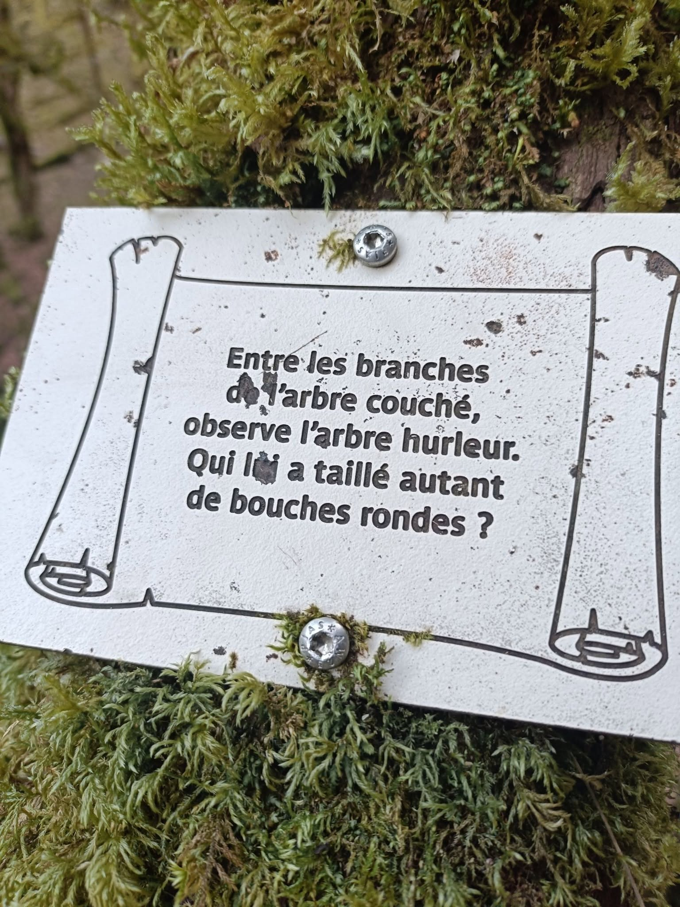

L'arbre hurleur
Entre les branches de l’arbre couché
le jour passe comme une eau lente.
Le tronc ouvert regarde le ciel
par ses blessures rondes.
Et plus loin, l’arbre hurleur —
debout dans la lumière grise —
porte au flanc mille bouches sombres
où le vent vient apprendre à crier.
Qui donc l’a sculpté ainsi ?
Quel sculpteur de tempêtes
a percé dans son corps
ces cercles avides
comme des lunes avalées ?
Peut-être la pluie patiente,
peut-être les années
qui mordent le bois
comme des dents invisibles.
Ou peut-être la forêt elle-même
qui, lasse de se taire,
a donné à cet arbre
toutes les bouches du silence.
Djamel Metref
At Yenni le 09 Mars 2026

← Tous les poèmes
L'arbre hurleur
Carnets de voyages · Nature et écologie